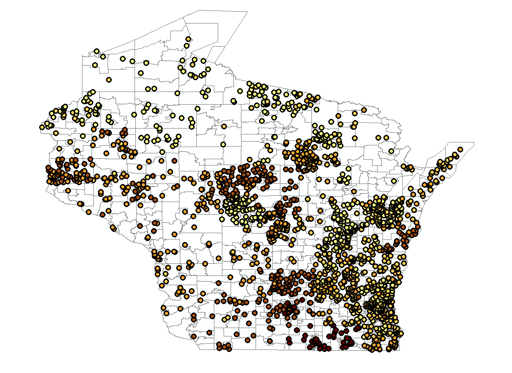
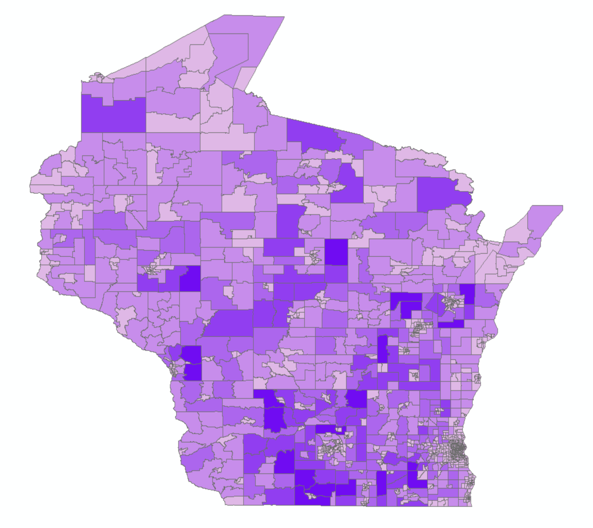
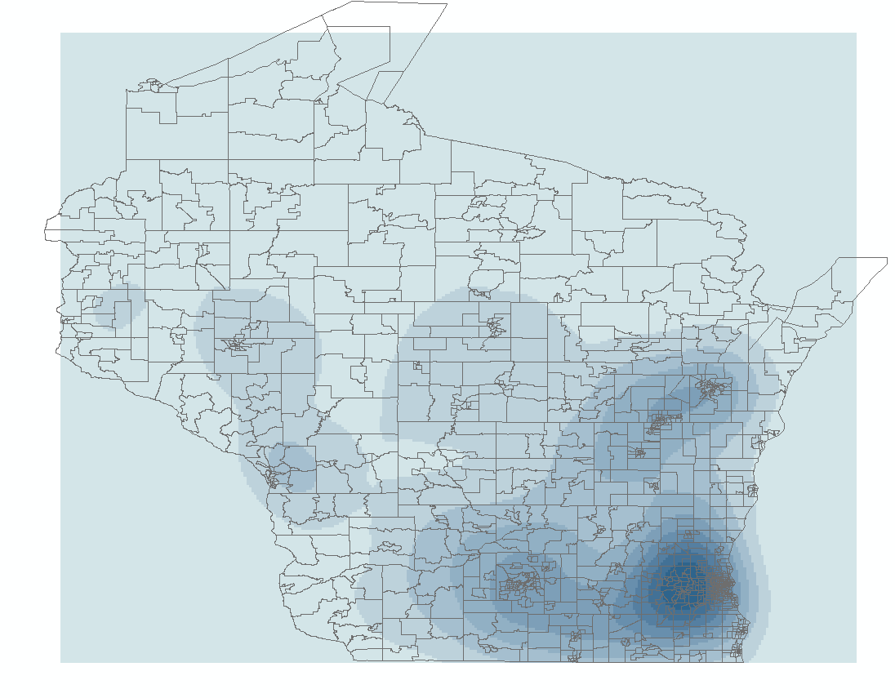
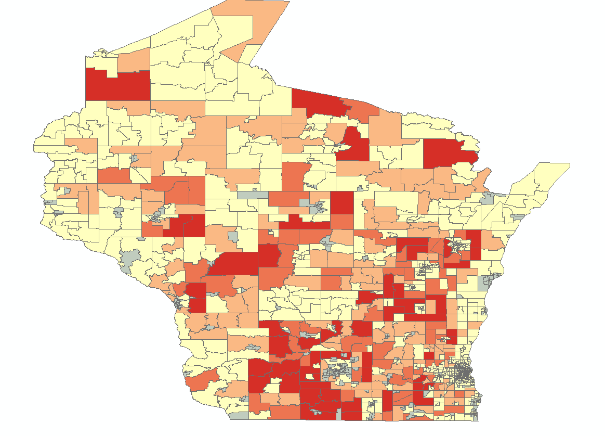

Nitrate x Cancer Capstone Project
For my summer 2017 capstone, I was tasked with a public health challenge. My favorite kind!
The Challenge
It has been suggested that there is a positive relationship between nitrates in water and cancer rates. To investigate, I was given two data sources.
Data Sources
1) Point data where wells were sampled for nitrates (randomly distributed)  2) Census tract data with cancer rates collected over a ten-year period
Turning Nitrate Data into Something Useful
One of the first steps was to interpolate the point data into a raster surface; in laymen's terms, interpolation guesses the values between the points of known values (i.e., the wells). One method is called Inverse Distance Weighting (IDW). I won't get into the nitty gritty of IDW, but rest assured it gets the job done. With IDW, there's one value that's up to the researcher: the power value (k). This is an exponent that should be somewhere between 0.5 and 3, but there is no rule of thumb for exactly what it should be. Each value of k returns a slightly different raster image. Play around with some k-values to see how it changes:

I decided on k=1.25 as the optimal choice for my analysis because it doesn't have as many of those "islands" you see when k=3, but it captures more nuance than when k=0.5. It's a happy medium.
Checking if Cancer is Clustered
It is wise to check if the cancer data are clustered before attempting an analysis. The project requested that I use Kernel Density Estimation (KDE) for this, which would not have been my first choice. However, I tried KDE using centroids for each tract because I'm a good sport. The output looks like this:  It appears to cluster around population centers like Milwaukee, Madison, Appleton, and Green Bay. Keep in mind, these are cancerratesso it is already normalized.
The Fun Part: Regression Analysis
Using a spatial join, I aggregated the nitrate data to census tracts because they need to be in the same spatial units for regression. I decided to use Ordinary Least Squares regression, where the dependent variable is the cancer rate and the explanatory variable is the nitrate rate. The output map below shows how well the model performed. The red areas show where the cancer rate is higher than the model predicted and the blue areas show where cancer rate is lower than the model predicted. The key to look for here is a lack of clustering; we don’t want to see a lot of clustered red areas or blue areas because this would suggest we’re missing an explanatory variable.  As evidenced by the OLS standard deviation map, there are quite a few red clusters. This means that while nitrate might have some explanatory power, it is not a main component. This is to be expected, because just based on common knowledge, there are other causes of cancer, including: air quality, family history, and diet. These were not included in the model. The numeric output from OLS tells more of the story. The adjusted R-squared value is 0.051971, which indicates that this model explains about 5% of the story of cancer incidence in Wisconsin.
The Verdict
Returning to the hypothesis, do nitrate rates in Wisconsin have a relationship to cancer rates? With only 5% explanation, it looks like there are many other factors needed to model cancer rates in Wisconsin. Thus, we cannot reject the null hypothesis. Moving forward, I would include additional variables and explore their relationships to cancer rates using a scatterplot matrix. Ideally, then we would get to a model with at least 80 percent R-squared.